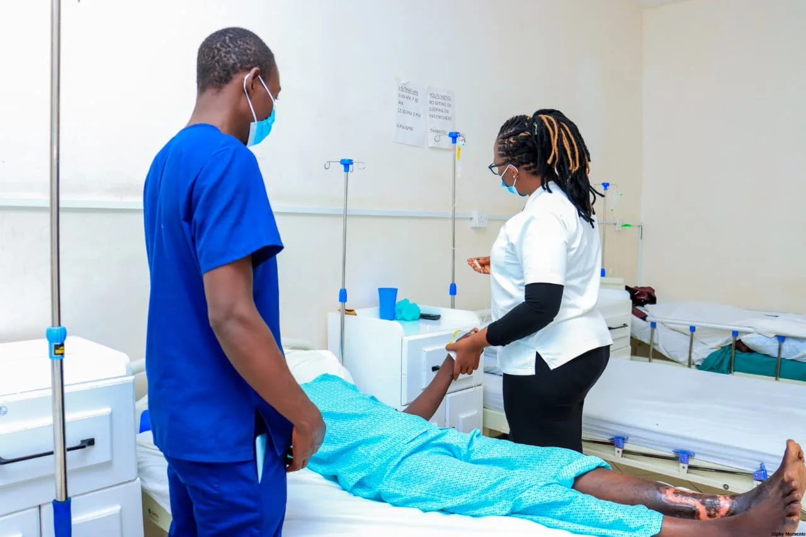

Outpatient services
General consultations, clinics and treatment for common illnesses and chronic conditions.
- General consultations
- Specialist and wellness clinics
- Treatment of common illnesses
- Hypertension and diabetes management
Services available
The centre provides primary and intermediate healthcare, with inpatient and outpatient services available 24 hours a day.
Ask about services
Inpatient careCurrent services
The services below are listed in the facility profile. Call the centre to confirm availability.
General consultations, clinics and treatment for common illnesses and chronic conditions.
Admission and nursing care for patients requiring an inpatient stay.
The profile lists wound care, suturing, incision and drainage, and minor theatre procedures.
The centre operates a registered Class C laboratory.
The pharmacy dispenses prescribed medicines and provides counselling on their use.
The profile lists the following specialised services:
Maternal and Child Health clinic · Antenatal care, immunisation and postnatal follow-ups.
Contact the centre
Contact
Contact the centre to confirm service availability and ask about visiting.
Contact the centre